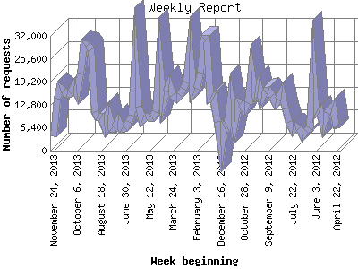

The Weekly Report identifies the activity for each week within the report
time frame. Remember that one page hit can result in several server requests
as the images for each page are loaded.
Note: Depending on the
report time frame for this report the first and last week may not represent
a full seven day week, resulting in lower hits.

| Week beginning | Number of requests | Number of page requests | |
|---|---|---|---|
| 1. | April 22, 2012 | 6,272 | 1,163 |
| 2. | April 29, 2012 | 12,602 | 1,665 |
| 3. | May 6, 2012 | 11,681 | 1,929 |
| 4. | May 13, 2012 | 10,529 | 1,955 |
| 5. | May 20, 2012 | 7,152 | 1,485 |
| 6. | May 27, 2012 | 11,156 | 2,744 |
| 7. | June 3, 2012 | 10,507 | 1,413 |
| 8. | June 10, 2012 | 21,477 | 2,847 |
| 9. | June 17, 2012 | 6,171 | 1,327 |
| 10. | June 24, 2012 | 5,511 | 1,186 |
| 11. | July 1, 2012 | 4,309 | 1,072 |
| 12. | July 8, 2012 | 6,177 | 1,288 |
| 13. | July 15, 2012 | 6,688 | 1,235 |
| 14. | July 22, 2012 | 5,812 | 1,276 |
| 15. | July 29, 2012 | 8,113 | 1,168 |
| 16. | August 5, 2012 | 11,725 | 1,490 |
| 17. | August 12, 2012 | 16,343 | 2,109 |
| 18. | August 19, 2012 | 14,140 | 2,293 |
| 19. | August 26, 2012 | 13,147 | 2,107 |
| 20. | September 2, 2012 | 15,330 | 2,054 |
| 21. | September 9, 2012 | 16,654 | 2,269 |
| 22. | September 16, 2012 | 16,463 | 2,277 |
| 23. | September 23, 2012 | 14,542 | 2,402 |
| 24. | September 30, 2012 | 18,239 | 2,029 |
| 25. | October 7, 2012 | 16,345 | 2,176 |
| 26. | October 14, 2012 | 22,260 | 2,461 |
| 27. | October 21, 2012 | 13,177 | 2,202 |
| 28. | October 28, 2012 | 11,498 | 2,060 |
| 29. | November 4, 2012 | 13,154 | 1,717 |
| 30. | November 11, 2012 | 13,531 | 1,751 |
| 31. | November 18, 2012 | 7,954 | 1,588 |
| 32. | November 25, 2012 | 14,466 | 1,976 |
| 33. | December 2, 2012 | 6,438 | 1,452 |
| 34. | December 9, 2012 | 6,878 | 1,332 |
| 35. | December 16, 2012 | 1,284 | 296 |
| 36. | December 23, 2012 | 7,879 | 2,703 |
| 37. | December 30, 2012 | 15,097 | 2,186 |
| 38. | January 6, 2013 | 14,486 | 1,831 |
| 39. | January 13, 2013 | 31,219 | 4,083 |
| 40. | January 20, 2013 | 31,148 | 3,170 |
| 41. | January 27, 2013 | 21,629 | 2,420 |
| 42. | February 3, 2013 | 17,139 | 2,034 |
| 43. | February 10, 2013 | 16,053 | 2,455 |
| 44. | February 17, 2013 | 27,422 | 3,192 |
| 45. | February 24, 2013 | 18,953 | 2,859 |
| 46. | March 3, 2013 | 17,148 | 2,462 |
| 47. | March 10, 2013 | 15,437 | 2,578 |
| 48. | March 17, 2013 | 14,612 | 2,893 |
| 49. | March 24, 2013 | 15,419 | 3,098 |
| 50. | March 31, 2013 | 18,408 | 3,342 |
| 51. | April 7, 2013 | 16,454 | 3,438 |
| 52. | April 14, 2013 | 13,007 | 2,574 |
| 53. | April 21, 2013 | 24,455 | 3,433 |
| 54. | April 28, 2013 | 10,645 | 2,624 |
| 55. | May 5, 2013 | 9,262 | 1,957 |
| 56. | May 12, 2013 | 9,140 | 2,123 |
| 57. | May 19, 2013 | 9,426 | 2,246 |
| 58. | May 26, 2013 | 8,491 | 1,951 |
| 59. | June 2, 2013 | 12,159 | 2,227 |
| 60. | June 9, 2013 | 25,470 | 4,239 |
| 61. | June 16, 2013 | 9,794 | 2,055 |
| 62. | June 23, 2013 | 8,107 | 1,924 |
| 63. | June 30, 2013 | 6,235 | 1,828 |
| 64. | July 7, 2013 | 5,912 | 1,777 |
| 65. | July 14, 2013 | 8,221 | 2,764 |
| 66. | July 21, 2013 | 6,338 | 2,313 |
| 67. | July 28, 2013 | 6,145 | 1,972 |
| 68. | August 4, 2013 | 10,113 | 3,079 |
| 69. | August 11, 2013 | 6,643 | 1,429 |
| 70. | August 18, 2013 | 9,593 | 2,330 |
| 71. | August 25, 2013 | 9,460 | 2,168 |
| 72. | September 1, 2013 | 10,670 | 1,719 |
| 73. | September 8, 2013 | 28,180 | 3,099 |
| 74. | September 15, 2013 | 29,390 | 3,950 |
| 75. | September 22, 2013 | 29,769 | 3,883 |
| 76. | September 29, 2013 | 21,466 | 4,076 |
| 77. | October 6, 2013 | 16,297 | 2,945 |
| 78. | October 13, 2013 | 17,927 | 4,226 |
| 79. | October 20, 2013 | 15,938 | 2,853 |
| 80. | October 27, 2013 | 15,808 | 3,377 |
| 81. | November 3, 2013 | 16,516 | 2,979 |
| 82. | November 10, 2013 | 17,561 | 2,938 |
| 83. | November 17, 2013 | 14,624 | 2,569 |
| 84. | November 24, 2013 | 3,948 | 798 |
Most active week beginning June 9, 2013 : 4,239 pages sent. 31,219 requests handled.
Weekly average: 2,297 pages sent. 13,606 requests handled.
This report was generated on November 26, 2013 03:09.
Report time frame April 23, 2012 00:22 to November 25, 2013 23:48.
| Web statistics report produced by: analog 5.1 / Report Magic 2.21 |